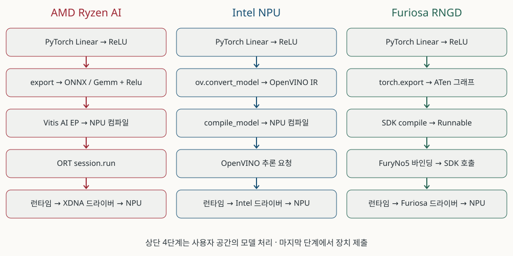

전체 경로에서의 위치
같은 모델이 다른 업체의 NPU에서는 어떤 도구를 거쳐 실행되는지 비교한다. PyTorch의 연산 전달은 09장, FuryNo5의 위치는 10장과 함께 본다.
C에서 같은 함수 이름을 호출해도 링크한 구현이나 함수 포인터에 따라 실행 코드가 달라진다. 컴파일러는 여러 문장을 분석해 하나의 더 효율적인 프로그램을 만들 수도 있다. PyTorch를 NPU에 연결하는 방법도 이 두 관점에서 시작하면 이해하기 쉽다. NPU(Neural Processing Unit)가 PyTorch를 지원한다는 말에는 여러 구현 방식이 들어 있다. 텐서의 장치 타입을 추가해 연산을 받을 수도 있고, 모델 그래프를 받아 한 덩어리로 컴파일할 수도 있으며, 특정 모델 구조의 가중치·상태·생성 루프를 연결하는 어댑터를 제공할 수도 있다. FuryNo5의 다음 기능을 설계하려면 이 경계를 나누어 비교하는 편이 유용하다.
이 장은 2026-11-19에 확인한 공식 문서와 고정 소스를 비교한다. 각 회사가 제공하는 모든 경로를 열거한 것은 아니며, 아래 예제의 SDK(Software Development Kit)와 장치는 서로 다르다. 이 비교는 실행 구조를 다루며 장치 간 성능 순위는 제시하지 않는다. PyTorch의 공통 확장 규약은 PrivateUse1과 custom compiler backend, 각 업체의 구현은 절별 출처를 기준으로 한다.
1. 지원이라는 말을 네 개의 계약으로 나눈다
같은 [1,2] 배열을 더하는 코드도 CPU와 NPU에서 실행하는 길이 다를 수 있다. 업체가 ‘PyTorch를 지원한다’고 할 때는 어느 지점에서 계산을 받는지부터 확인해야 한다.
연산 하나씩 받을 수도 있고, 모델의 여러 계산을 연결한 그래프를 한 번에 받아 컴파일할 수도 있다. 특정 모델의 가중치·입력·상태를 아는 별도 실행기를 제공하는 방식도 있다. 아래 네 가지 구분은 이 진입점과 책임을 비교하기 위한 것이다.
Backend는 같은 상위 연산을 실제로 수행하는 구현 쪽이다. 한 연산씩 적절한 backend 함수를 고르는 것을 dispatch(디스패치)라고 한다. 반면 계산 그래프는 연산을 정점, 값 전달을 간선으로 기록한 프로그램이다. Python 코드 y=x*2+3을 입력→곱하기→더하기→출력으로 적으면 실행 전에 전체 관계를 분석할 수 있다. 컴파일 중 쓰는 이런 표현이 IR(Intermediate Representation, 중간 표현)이다.
이제 “지원한다”를 다음 네 질문으로 나눌 수 있다.
| 지원 계약 | 호출자가 기대하는 것 | 구현자가 해결해야 하는 일 |
|---|---|---|
| 텐서·연산 지원 | 장치 텐서를 만들고 add, matmul 등을 호출 |
메모리 할당·복사·주소 계산·실행 순서·연산 구현·오류 정책 |
| 그래프 지원 | 여러 연산이 있는 함수를 컴파일해 반복 실행 | 캡처, 분해, 지원 영역 선택, shape 조건, 코드 생성, 컴파일 캐시 |
| 모델 지원 | 모델 ID·가중치를 넘겨 결과를 얻음 | 구조와 설정 해석, 가중치 변환, 입출력·참고할 위치·요청별 상태 계약 |
| 서비스 지원 | 동시 요청, 생성·취소, 배치, 상태 독립성 | 요청 스케줄링, 메모리 관리, 다음 출력 선택, 서비스 지연과 장애 처리 |
예를 들어 add 구현이 있어 두 배열을 더할 수 있어도 모델의 가중치 파일을 어떤 순서로 연결할지, 이전 요청의 상태를 어디에 보관할지는 아직 정해지지 않았다. 여러 요청을 동시에 받는다면 상태를 분리하고 종료 시 메모리를 회수하는 일도 추가된다. 위 표는 그 책임을 나눈 핸드북의 비교 기준이다. 텐서 연산 하나를 성공시킨 뒤 곧바로 임의 Hugging Face 모델의 서빙을 보장할 수 없는 이유를 설명한다. FuryNo5의 연산·그래프 생산 역할은 10장, fxbX의 적재·실행계획은 12장, 서빙 계약은 14장과 연결된다.
ATen(A Tensor Library)은 PyTorch의 tensor 연산 계층이고, FX는 Python 수준에서 그래프를 표현·변환하는 도구 이름이다. 아래 ATen 경로는 연산 구현을 고르는 관점, FX 경로는 그래프 전체를 변환하는 관점이다.

그림의 구조 보기
flowchart TB A["PyTorch 모델"] --> B["ATen 디스패치 경로"] A --> C["FX · export 그래프 경로"] A --> D["모델별 어댑터"] D --> C B --> E["장치 연산 · 커널 구현"] C --> F["그래프 컴파일 · 장치 실행물"] E --> G["해당 업체의 런타임 · 드라이버"] F --> G G --> H["해당 업체의 가속기"]
이 도식은 지원 방식의 분류다. 업체마다 독립된 런타임·드라이버를 갖고, 한 업체 안에서도 여러 실행 경로가 있을 수 있다. FX는 PyTorch의 그래프 표현·변환 도구 이름이며, IR(Intermediate Representation)은 컴파일 중 분석하고 변환할 중간 표현을 뜻한다.
2. 방식 A: PyTorch 장치로 들어간다
PyTorch가 덧셈을 실행할 때 ‘이 tensor는 어느 장치에 있나’를 보고 구현을 고를 자리가 필요하다. 외부 장치를 연결하도록 예약해 둔 구분자가 PrivateUse1이다. 암호 키가 아니라 구현 선택에 쓰는 이름이다.
개발자는 TORCH_LIBRARY_IMPL(aten, PrivateUse1, ...)로 해당 장치의 연산 함수를 등록할 수 있다. 하지만 이 등록 외에도 저장 공간 할당·복사·완료 처리가 필요하다. 연산 함수를 몇 개 등록하는 것과 PyTorch 장치 전체를 완성하는 것은 다르다. 공식 backend 통합 설명
함수 포인터 표에 비유하면 다음과 같다. 아래 함수명은 역할을 설명하기 위한 가상 이름이며 PyTorch의 실제 C++ symbol은 아니다.
| 호출 연산 | 선택된 backend | 호출할 구현의 개념 |
|---|---|---|
| add | CPU | cpu_add |
| add | PrivateUse1 | vendor_add |
| matmul | PrivateUse1 | vendor_matmul |
실제 PyTorch dispatcher는 장치 외에도 자동미분 같은 여러 키를 고려한다. PrivateUse1 등록이 “없는 모든 연산을 자동 변환한다”는 의미는 아니다. 구현이나 분해 경로가 없는 연산을 만났을 때 오류를 낼지, 별도 fallback을 쓸지도 backend가 정의해야 한다.
장치 tensor를 만들려면 allocator(메모리 할당기)가 저장 공간을 확보하고, CPU 값을 옮기는 복사 경로가 있어야 한다. 현재 사용할 장치를 선택·복구하는 device guard, 작업 제출 순서를 관리하는 stream도 실행기 설계에 들어간다. stream에 제출이 끝났다고 장치 계산까지 끝난 것은 아니다. 따라서 올바른 결과를 CPU로 읽을 때 완료 대기도 필요하다.
Ascend: TorchNPU와 TorchAir를 구분한다
Ascend의 TorchNPU는 연산과 장치 자원을 PrivateUse1로 통합하는 사례다. 다음은 해당 환경에서 두 텐서를 장치로 옮겨 행렬곱을 수행하는 짧은 예다. 호환되는 CANN(Compute Architecture for Neural Networks), 드라이버, PyTorch, TorchNPU가 먼저 설치되어 있어야 한다. Furiosa 환경에 이 import만 추가해 실행되는 코드는 아니다. TorchNPU 고정 README
행렬곱은 왼쪽의 한 행과 오른쪽의 한 열을 원소별로 곱해 더한다. 예를 들어 [1,2] @ [[1,2],[3,4]]의 첫 출력은 1×1+2×3=7, 둘째는 1×2+2×4=10이다. 아래 큰 예에서도 같은 규칙을 쓴다. 왼쪽 [16,32]와 오른쪽 [32,64]의 공통 차원 32를 곱해 합치므로 결과는 [16,64]다. 16·32·64는 배열 크기이며 PE 개수가 아니다.
# Ascend 전용 예제. 호환 장치와 TorchNPU 설치가 필요하다.
import torch
import torch_npu # Ascend 장치 연산과 Python 연결을 준비한다.
left = torch.randn(16, 32).npu() # CPU에서 만든 [16,32] 값을 Ascend 장치로 옮긴다.
right = torch.randn(32, 64).npu() # 공통 축 32가 왼쪽 열 수와 같아야 한다.
product = left @ right # 결과 shape [16,64], 행·열의 곱을 32개씩 합한다.
Eager 실행은 Python이 연산을 호출할 때 그 연산을 바로 실행하는 방식이다. TorchAir-GE는 여러 연산을 모은 더 큰 그래프를 다룬다. torch.compile이 받은 FX 그래프를 IR로 바꾸고 GE(Graph Engine)로 컴파일·실행한다. 공식 사용법은 eager 경로에서 모델이 올바르게 실행되는지 먼저 확인하고 torch_npu, torchair 순서로 import하도록 안내한다. 두 경로가 함께 존재한다는 점이 중요하다. TorchAir-GE 문서
FuryNo5에 대한 해석은 이렇다. 장치 tensor의 일반 연산 호환성을 넓히는 일과, 그래프의 큰 영역을 합쳐 빠르게 실행하는 일은 별도의 개발 축이다. FuryNo5의 현재 tclmachine custom op 등록·FX 치환을 TorchNPU와 동일한 완성도의 전역 장치 통합이라고 부르지 않는다. 현재 등록 경로
3. 방식 B: 그래프를 받아 장치 프로그램으로 컴파일한다
다른 방식은 연산을 하나씩 받지 않고 연결된 계산을 한꺼번에 받는 것이다. torch.compile의 custom backend는 이런 그래프와 예제 입력을 받아 나중에 실제 입력으로 호출할 함수를 돌려준다.
그 반환 함수가 NPU 프로그램을 호출해야 장치 실행이 생긴다. 그냥 CPU 함수를 돌려주면 계산 결과는 맞아도 NPU 가속은 없다. 아래 코드는 이 전달 관계만 CPU에서 확인하는 예제다. PyTorch custom backend 규약
여기서 GraphModule은 “그래프와 그것을 실행하는 Python 함수를 함께 가진 객체”다. backend는 예제 입력을 보고 지원 크기·자료형을 정하며, 변환한 그래프를 실행할 callable을 반환한다. 반환 함수는 넘겨받은 그래프의 인수·출력 계약을 지켜야 한다. 원래 모델에 x 하나만 있었어도 그래프의 인수에는 가중치·buffer가 별도로 들어올 수 있으므로 원래 Python 함수 시그니처를 추측하면 안 된다.
이 예제는 입력의 각 행을 16→32→8개 숫자로 변환한다. Linear(in,out)은 입력 벡터에 학습된 가중치를 곱하고 bias를 더하는 층이다. PyTorch의 weight는 [out,in]이므로 계산은 x @ weight.T + bias다. T는 행과 열을 바꾸는 전치다. ReLU는 원소별 max(0,x)여서 음수는 0, 양수는 그대로 둔다. 입력 두 개를 묶은 [2,16]은 첫 Linear 뒤 [2,32], 마지막 뒤 [2,8]이 된다.
import torch
compile_events = []
def inspect_backend(graph_module, example_inputs):
compile_events.append(len(list(graph_module.graph.nodes))) # backend가 받은 그래프의 노드 수
print(graph_module.code) # 입력·가중치가 어떤 인수로 나타났는지 관찰한다.
# 실제 NPU backend는 이 자리에서 IR 변환·컴파일·실행기 생성을 한다.
# 여기서는 원래 그래프 함수를 반환하므로 CPU 실행을 유지한다.
return graph_module.forward
model = torch.nn.Sequential(
torch.nn.Linear(16, 32), torch.nn.ReLU(), torch.nn.Linear(32, 8)
).eval()
compiled = torch.compile(
model, backend=inspect_backend,
fullgraph=True, # 그래프를 끊어 Python으로 이어 실행하는 지점이 있으면 오류로 드러낸다.
dynamic=False, # 이 실습에서는 관찰한 shape를 기준으로 특수화한다.
)
x = torch.randn(2, 16) # 입력 두 행, 행마다 특성 16개
with torch.inference_mode(): # 추론 중 역전파용 기록은 만들지 않는다.
torch.testing.assert_close(compiled(x), model(x)) # 두 [2,8] 출력을 비교한다.
torch.testing.assert_close(compiled(x + 1), model(x + 1)) # shape는 유지하고 값만 바꾼다.
print("backend가 받은 그래프 크기:", compile_events)
.eval()은 dropout·정규화처럼 학습/추론 모드가 있는 층을 추론 모드로 놓고, inference_mode()는 자동미분 기록을 끈다. torch.compile 호출은 실행 준비 객체를 만들며 보통 첫 실제 입력 호출에서 캡처와 backend 작업을 진행한다. 이후 조건이 같으면 준비 결과를 재사용할 수 있다. 새 shape·상태로 가정이 바뀌면 재컴파일이 필요할 수 있다.
코드는 그래프 표현과 backend에 전달된 노드 수를 출력하고, 두 번의 출력 비교가 맞지 않으면 오류를 낸다. 노드 수나 backend 호출 횟수를 모든 PyTorch 버전에서 같은 상수라고 가정하지 않는다. 이 예제로 컴파일 경계의 위치를 볼 수 있지만 성능 개선을 증명한 것은 아니다. 실제 backend는 허용 shape·dtype·stride, 모델 상태, 재컴파일 조건, 실패 시 동작을 함께 정의해야 한다. 다운로드 가능한 같은 실습은 inspect_fx_backend.py에 있다.
원래 함수의 인수와 캡처한 함수의 인수를 연결한다
위 print(graph_module.code)를 읽을 때는 사용자가 부르는 함수와 backend가 구현할 함수가 같은 인수 목록인지 먼저 확인한다. 모델 객체가 멤버로 보관하던 weight·bias가 캡처된 그래프에서는 명시적인 인수로 나타날 수 있다. 모델이 반환한 tensor 한 개가 그래프 내부에서는 한 원소 tuple 같은 컨테이너로 반환될 수도 있다. backend는 전달받은 GraphModule.forward의 계약을 그대로 맞추고, 바깥의 컴파일 실행 경로가 사용자 호출과 그 내부 호출을 연결한다.
아래는 숫자 하나를 x×weight+bias로 바꾸는 호출 구조 설명용 예다. 위 MLP(Multi-Layer Perceptron)의 실제 출력 코드를 관측해 옮긴 것이 아니며, 모든 PyTorch 버전이 같은 인수 순서·tuple 형태를 만든다는 뜻도 아니다.
| 경계 | 설명용 함수 형태 | 이 경계를 호출하는 쪽의 책임 |
|---|---|---|
| 사용자 모델 | model(x) → y |
x만 전달. weight·bias는 모델 상태 |
| 캡처된 그래프 | forward(weight,bias,x) → (y,) |
세 인수를 올바른 순서로 전달하고 한 원소 컨테이너 받기 |
| backend가 반환한 callable | 위 캡처 그래프와 같은 계약 | 가속 여부와 관계없이 입력 순서·출력 구조 유지 |
| 사용자에게 돌아갈 결과 | 다시 y |
내부 결과를 원래 모델의 반환 구조로 복원 |
tuple의 (y,)에서 쉼표는 “원소 하나의 tuple”을 만든다. (y)는 괄호로 감싼 y 자체다. backend가 첫 형태를 요구받았는데 y만 반환하면 값이 7로 같아 보여도 호출자가 기대하는 출력 구조는 깨진다. Python의 리스트·tuple도 함수 인터페이스의 일부다.
captured_call_contract_demo.py는 외부 패키지 없이 이 대응을 실행한다. 여기서 user_wrapper는 역할을 보여 주기 위해 직접 쓴 함수이며 PyTorch 내부 구현을 복제한 코드가 아니다.
weight, bias = 2, 1 # 원래 모델 객체가 보관한다고 가정한 스칼라 상태
def original_model(x):
return x * weight + bias # 사용자 계약: 인수 하나, 숫자 하나 반환
def captured_forward(weight_arg, bias_arg, x_arg):
y = x_arg * weight_arg + bias_arg
return (y,) # 이 설명용 캡처 그래프의 계약: 인수 셋, 한 원소 tuple 반환
def example_backend(graph_forward):
# 실제 backend 함수의 (GraphModule, example_inputs) API가 아닌 역할 설명용 함수다.
return graph_forward # 실제 backend도 받은 그래프의 호출 계약을 보존해야 한다.
backend_callable = example_backend(captured_forward)
def user_wrapper(x):
internal_outputs = backend_callable(weight, bias, x) # 바깥 상태를 내부 인수로 연결
(y,) = internal_outputs # 내부 반환 구조를 풀어 원래 사용자 출력으로 연결
return y
assert captured_forward(2, 1, 3) == (7,)
assert user_wrapper(3) == original_model(3) == 7
print(captured_forward(2, 1, 3), user_wrapper(3)) # (7,) 7
실제 실습에서는 위의 이름·순서를 추측해 하드코딩하지 않고, 출력한 graph_module.code의 forward 인수와 return을 읽는다. 앞의 inspect_backend가 graph_module.forward를 그대로 반환하는 이유도 그 계약을 보존하기 위해서다. NPU용 callable로 바꿀 때는 해당 인수들을 장치 입력·상수·상태로 연결하고, 결과를 그 그래프가 요구한 구조로 돌려줘야 한다. 단일 tensor를 반환하는 원래 모델과 내부 그래프의 반환 컨테이너를 무조건 같다고 간주하지 않는다. PyTorch backend 호출 계약 · 확인한 소스 본문
Rebellions: 명시적 컴파일과 torch.compile 경로
Rebellions 공식 Quick Start는 rebel.compile_from_torch로 모델을 컴파일해 .rbln으로 저장하고 rebel.Runtime으로 실행하는 경로, 그리고 torch.compile(..., backend="rbln") 경로를 각각 보여준다. 후자는 첫 호출의 컴파일·캐시 조회와 이후 반복 실행을 구분한다. 조사한 문서의 mode="strict"는 컴파일 실패를 오류로 드러내며, 기본 폴백 설명과 구분된다. 이는 해당 RBLN 경로의 정책이다. 다른 NPU의 EDF 누락 정책으로 옮겨 해석하지 않는다. 공식 Quick Start
# 호환 RBLN SDK와 backend가 설치된 환경의 핵심 호출 예시.
import torch
import rebel # 이 프로세스에 rbln compiler backend를 등록한다.
# model은 eval()로 준비한 모델, inputs는 그 모델의 대표 입력이다.
compiled = torch.compile(
model,
backend="rbln",
dynamic=False, # 관찰한 입력 shape를 기준으로 컴파일하는 예
options={
"cache_dir": "./rbln-cache", # 호환되는 기존 컴파일 결과를 찾거나 새로 보관할 위치
"mode": "strict", # 컴파일 실패를 조용한 CPU 대체로 숨기지 않음
},
)
with torch.no_grad():
result = compiled(inputs)
AWS Neuron: HLO에서 NEFF로 가는 traced inference
AWS(Amazon Web Services) Neuron의 torch_neuronx.trace 추론 경로는 torch-xla로 HLO(High Level Operations) 표현을 만들고 neuronx-cc로 NEFF(Neuron Executable File Format)를 생성한다. 이 바이너리가 TorchScript ScriptModule에 담긴다. 여기서 비교하는 것은 Neuron 2.31.1 문서의 traced inference 경로이며, Neuron의 학습·다른 frontend까지 한 방식으로 일반화하지 않는다. Tracing API
이 문맥의 trace는 예제 입력으로 모델 연산을 추적해 컴파일하는 진입점이며, 실행 시간을 수집하는 profiler trace와 목적이 다르다. HLO는 행렬곱·덧셈 같은 연산을 표현하는 중간 단계다. NEFF는 Neuron 장치 프로그램을 담는 실행 파일 형식이고, ScriptModule은 저장·재적재 가능한 TorchScript 실행 객체다. .pt는 이 예에서 NEFF를 품은 상위 저장물이며 C 소스나 일반 CPU 실행 파일로 바뀌었다는 뜻이 아니다.
| 단계 | 입력 | 나온 결과 | 아직 확인하지 못한 것 |
|---|---|---|---|
trace(net, sample) |
모델과 대표 배열 | HLO를 거쳐 컴파일한 추론 객체 | 다른 shape·다른 NPU의 지원 |
torch.jit.save |
컴파일한 객체 | 저장 파일 | 새 환경에서의 호환성 |
torch.jit.load |
저장 파일 | 다시 호출할 객체 | 해당 입력의 실제 실행·정답 |
restored(sample) |
호환 입력 | 모델 출력 | 다른 입력 분포의 품질·성능 |
# Neuron SDK 전용 핵심 예시. 다른 NPU에서 재사용할 수 있는 파일이 아니다.
import torch
import torch_neuronx
net = torch.nn.Sequential(torch.nn.Linear(16, 8), torch.nn.ReLU()).eval()
sample = torch.randn(1, 16) # 한 입력 벡터, 특성 16개; 출력은 [1,8]
artifact = torch_neuronx.trace(net, sample) # 대표 shape·dtype를 기준으로 장치 프로그램 생성
# 이 파일은 Neuron 실행물을 담는다. Furiosa EDF로 이름만 바꿀 수 없다.
torch.jit.save(artifact, "small-neuron.pt")
restored = torch.jit.load("small-neuron.pt") # 호환 Neuron 환경에서 실행 객체 복원
prediction = restored(sample) # 같은 입력 계약으로 실제 추론
이 경로는 예제 입력의 shape와 dtype 조건을 고정한다. Bucket(입력 규격 묶음)은 서로 다른 입력 크기에 맞춰 준비한 실행 규격이다. 가령 별도 배치 1용 [1,16]과 배치 4용 [4,16] 실행물을 준비했다면 요청 수에 맞는 것을 고르는 정책이 추가로 필요하다. 위 코드가 그 두 규격을 자동으로 생성한다는 뜻은 아니다. 가변 길이를 다루는 방법으로 bucketing을 설명하며, 추론 시 아무 shape나 받아 동일 실행물을 재사용한다는 의미가 아니다. FuryNo5의 shape 계약과 버킷 문제도 같은 관점에서 읽을 수 있다. Neuron tracing 제약 · 06장
DMA(Direct Memory Access)는 CPU가 원소마다 복사 명령을 반복하기보다 전송 장치에 메모리 이동을 맡기는 방식이다. 전송의 출발지·도착지·크기 등을 나타낸 자료가 descriptor(전송 설명 자료)다. Pseudo instruction(의사 명령)은 파일에 기록된 더 추상적인 동작 표현으로, 적재기가 실제 장치에서 필요한 명령이나 전송 설명 자료로 구체화할 수 있다.
또 하나 배울 점은 바이너리 파일과 장치에 바로 복사할 원시 명령열이 항상 같은 것은 아니라는 사실이다. Neuron Runtime 2.28 문서는 NEFF 컨테이너 안의 명령·텐서 정보 등을 읽고, 일부 pseudo instruction을 적재 시 하드웨어 명령과 DMA descriptor로 변환하는 단계를 명시한다. 이것은 Neuron의 확인된 사례다. 이 사실만으로 Furiosa EDF도 같은 pseudo instruction·patching 포맷이라고 추정하지 않는다. Neuron Runtime 구조 · Furiosa EDF의 확인 범위
4. Tenstorrent: 공통 IR과 고수준 의미를 함께 보존한다
여러 도구가 같은 계산을 주고받으려면 서로 읽을 표현과 호출 방법이 필요하다. Frontend는 사용자 모델을 컴파일러 쪽 표현으로 바꾸는 입력 처리부이고, 런타임 인터페이스는 준비한 결과를 호출하는 경계다.
TT-XLA에서는 PJRT라는 연결 인터페이스와 StableHLO라는 계산 표현이 이 사이에 쓰인다. 받은 표현은 TT-MLIR 컴파일러 쪽으로 전달된다. 처음에는 약어를 모두 외우기보다 ‘모델을 받는 쪽 → 계산 표현 → 장치 컴파일러 → 실행’의 위치를 구분하면 된다. 고정 README
RMSNorm을 기본 산술에서 다시 묶는 이유
RMSNorm은 벡터의 원소 크기를 정규화하는 연산이다. RMS(Root Mean Square)는 “제곱 → 평균 → 제곱근” 순서로 구한다. 설명용 입력 [3,4]의 제곱은 [9,16], 평균은 (9+16)/2=12.5, 제곱근은 약 3.5355다. 원소를 그 값으로 나누면 약 [0.8485,1.1314]가 된다. 실제 연산은 작은 epsilon을 더해 0 나눗셈 등을 피하고, 학습한 원소별 가중치도 곱한다.
compiler가 이 계산을 “제곱·합·나눗셈·제곱근·곱”으로만 보게 되면 정규화라는 의미를 놓칠 수 있다. Fusion(연산 결합)은 여러 연산을 함께 처리하는 변환이고, composite(복합 연산 표식)는 묶인 계산에 rms_norm 같은 의미 있는 이름을 남겨 후속 변환이 알아보도록 하는 방법이다. 표식만 붙였다고 빠른 커널이 생기는 것은 아니며, 아래 compiler가 그 의미를 구현하는 경로도 필요하다.
FuryNo5에 특히 참고할 부분은 분해하기 전에 연산의 의미를 남기는 방법이다. TT-XLA는 등록된 RMSNorm(Root Mean Square Normalization) 패턴과 shape 조건이 맞으면 여러 기본 연산을 FX 패턴으로 찾고 표준 정규화 연산으로 재결합한다. 이어 StableHLO composite 표식을 남겨, 후속 분해를 거친 뒤에도 TT-MLIR가 최적화된 연산으로 인식할 수 있게 한다. Fusing and Composite Ops

그림의 구조 보기
flowchart TB A["사용자 RMSNorm: 제곱 · 평균 · 역제곱근 · 곱"] --> B["FX 패턴 인식"] B --> C["표준 RMSNorm 표현"] C --> D["StableHLO composite로 의미 보존"] D --> E["TT-MLIR의 전용 lowering"] A --> F["의미 표식 없이 기본 연산으로 분해"] F --> G["일반 연산 경로의 비용과 비교"] E --> G
Attention은 현재 위치가 참고할 다른 위치들의 가중치를 계산해 내용을 섞는 연산이다. Gated MLP(Multilayer Perceptron)는 여러 선형 층으로 만든 벡터에 별도의 gate 벡터를 원소별로 곱해 통과량을 조절하는 형태다. 이들 역시 작은 산술 연산의 목록과 전체 의미를 함께 이해하는 것이 도움이 된다.
이것을 FuryNo5에 옮기는 연구 가설은 “모든 ATen을 가능한 한 잘게 쪼개기”에만 집중하지 말고, RMSNorm·Attention·gated MLP 같은 영역의 의미를 유지한 채 합법적인 TCL 또는 커스텀 커널 후보를 선택하자는 것이다. 실제 효과는 대상 shape와 반올림·dtype·상태 조건에 따라 측정해야 한다. 외부 프로젝트의 최적화가 RNGD에서도 같은 성능을 낸다는 증거는 아니다. 19장 모델·실행 방식 최적화 연구
5. 모델 어댑터는 컴파일러 위에 놓이는 별도 계층이다
모델 어댑터가 필요한 이유를 파일 읽기에 비유할 수 있다. 배열 파일에 layer.0.weight라는 값이 있어도 그것이 어느 층의 어떤 입력에 곱해지는지는 모델 구조가 정한다. 같은 출력 shape의 두 배열을 뒤바꾸면 loader는 읽을 수 있어도 모델은 틀린 결과를 낼 수 있다. 모델 어댑터는 구조·설정·가중치 이름·전후처리·상태를 연결한다. 생성 모델이라면 과거 토큰의 attention 값을 보관하는 KV(Key–Value) cache, 읽으면 안 되는 위치를 막는 mask, 요청을 끝낼 규칙도 맞춰야 한다.
Optimum RBLN은 Hugging Face Transformers·Diffusers의 모델 클래스를 RBLN용 클래스로 연결한다. 조사한 소스는 모델 ID에서 처음 컴파일하는 경로와 저장된 산출물 디렉터리에서 다시 적재하는 경로를 나눈다. 컴파일러 자체와 모델별 가중치·입출력·상태 연결부의 역할이 분리되어 있다. 공개 어댑터의 존재가 의존 컴파일러의 전체 공개를 뜻하지도 않는다. Optimum RBLN README
FHA(Furiosa-Hug-Anything)와 비교할 지점도 여기에 있다. 모델을 찾고 작업을 준비하는 과정, 지원되지 않는 계산을 드러내고 구현하는 과정, 컴파일 산출물을 패키징하는 과정, 재현 가능한 검증과 게시 과정을 연결해야 한다. FuryAwesome는 발견·요청·배포 정보, FuryNo5는 변환·컴파일·실행계획 생산, fxbX는 패키지 적재·실행, FHA는 작업 절차와 도구 연결이라는 역할을 기준으로 보면 다른 생태계의 모델 어댑터와 비교하기 쉽다. 실제 자동화 범위와 포맷별 게시 조건은 13장에서 확인한다.
6. 한 표로 비교하고 FuryNo5의 다음 작업을 정한다
| 사례 | 이 장에서 확인한 진입점 | 중간·배포 표현 | FuryNo5에서 참고할 설계 |
|---|---|---|---|
| Ascend | TorchNPU의 장치 연산, TorchAir-GE 그래프 | ATen dispatch, FX·GE IR | 장치 호환성과 그래프 최적화의 책임 분리 |
| Rebellions | compile_from_torch, torch.compile, Optimum RBLN |
.rbln, 모델별 저장 디렉터리 |
명시적 컴파일·적재와 편리한 모델 API 병행 |
| AWS Neuron | torch_neuronx.trace 추론 |
HLO → NEFF → ScriptModule | 입력 조건·배포 실행물·런타임 적재의 구분 |
| Tenstorrent | TT-XLA·PJRT | StableHLO → TT-MLIR·TTNN | frontend 재사용, composite 의미 보존 |
| FuryNo5·fxbX | 프로젝트의 capture·변환·export | TCL·EDF·실행계획·패키지 | 지원 증거, 캐시 계약, 모델 상태와 게시를 함께 관리 |
표의 업체별 근거는 앞 절의 공식 문서다. 마지막 열은 FuryNo5 개발 관점의 해석이다. 지원 모델 개수나 성능 우열을 나타내는 표로 사용하지 않는다.
실제로 가져올 개선을 고를 때는 다음 순서가 출발점이 된다.
- 지원 보고를 모델 이름보다 세밀하게 만든다. 연산 overload·shape·dtype·stride·상태 조건으로 실패를 재현한다.
- 의미가 큰 영역을 유지할 지점을 만든다. 무조건 분해하기 전에 전용 lowering과 일반 분해를 비교한다.
- 컴파일 성공과 런타임 성공을 별도로 기록한다. 파일 생성, 로드, NPU 실행, 수치 일치, warm 성능을 분리한다.
- 모델 어댑터와 공통 컴파일러의 경계를 유지한다. 특정 모델의 특수 조건을 전체 ATen 규칙에 섞지 않는다.
- 검증된 산출물의 사용법을 배포 정보에 남긴다. 외부 가중치, Python API, 입력 규격, SDK와 topology 조건을 FuryAwesome에서 다시 확인할 수 있게 한다.
이 순서는 기능이 이미 구현되었다는 뜻이 아니다. 현재 구현은 10–13장, 개선 후보의 평가 방법은 19장을 함께 본다.
7. AMD·Intel의 드라이버 통합은 ATen 구현인가?
‘드라이버를 설치하니 모델이 실행됐다’고 해도 모델을 이해하는 일과 장치에 작업을 넣는 일은 구분해야 한다. 컴파일러는 모델의 계산을 장치 프로그램으로 바꾸고, 커널 드라이버는 운영체제를 통해 장치에 접근하고 작업을 제출하는 역할을 한다.
Intel OpenVINO NPU 경로에서는 컴파일러 라이브러리를 드라이버 패키지에 포함해 제공하는 경우도 있고, OpenVINO 패키지의 컴파일러를 사용하는 경로도 있다. 설치 묶음이 같아 보여도 역할이 합쳐진 것은 아니다. 아래는 2026-11-21에 확인한 대표 추론 경로를 비교한다.
| 계층 | AMD Ryzen AI 대표 경로 | Intel OpenVINO NPU 경로 | Furiosa 대표 경로 |
|---|---|---|---|
| 모델 입력 | ONNX Runtime에 ONNX 모델 전달 | OpenVINO 모델 변환·읽기 | SDK의 PyTorch export 또는 Furiosa-LLM 지원 모델 |
| 컴파일 | Vitis AI EP가 지원 그래프를 장치 실행물로 변환 | NPU 플러그인이 컴파일러를 호출해 장치용 형식 생성 | TCL·SDK 컴파일로 EDF·Runnable 생성, 공식 LLM은 FXB 준비 |
| 실행 관리 | ONNX Runtime과 EP | OpenVINO NPU 플러그인 | SDK Runnable 또는 Furiosa-LLM, 사용자 fxbX 실행계획 |
| 장치 접근 | 해당 런타임과 XDNA 드라이버 | 사용자 공간 장치 API와 NPU 드라이버 | Furiosa 런타임과 드라이버 |
AMD의 ONNX Runtime EP가 ONNX 그래프를 받는다는 사실은 ATen 디스패처의 각 연산을 AMD NPU용으로 등록했다는 증거가 아니다. ATen 구현 여부를 확인하려면 PyTorch dispatcher 등록이나 backend 코드를 별도로 봐야 한다. Intel에서도 OpenVINO로 모델을 변환해 NPU에서 실행하는 경로와 PyTorch의 연산별 장치 디스패치를 구분한다. AMD GPU의 ROCm 경로 역시 Ryzen AI NPU 경로와 다른 대상이다.
위 표에서 컴파일러는 사용자 공간에서 장치 실행물을 만들고, 드라이버는 그 실행물을 제출할 때 사용된다. 모델을 처음 열 때 컴파일할 수도 있고, 미리 만든 실행물이나 캐시를 불러올 수도 있다.
AMD Vitis AI EP는 지원하는 서브그래프를 선택하고 컴파일한다. CPU EP와 함께 구성하면 지원되지 않는 구간이 CPU로 배정될 수 있다. 이때 모델이 실행됐다는 사실과 NPU에서 효율적으로 실행됐다는 사실을 각각 확인해야 한다. Intel OpenVINO 역시 장치 선택·플러그인·모델 지원 범위를 확인한다. 드라이버를 설치한 뒤 임의 모델이 모두 같은 경로로 실행된다고 가정하지 않는다.
AMD Ryzen AI 배포 문서 · ONNX Runtime Vitis AI EP · Intel NPU 장치·컴파일러 문서 · AMD XDNA 드라이버와 사용자 공간 SHIM
같은 Linear → ReLU를 코드로 따라가기

세 예제는 입력 [4,8], 가중치 [8,8], bias [8]인 같은 모델을 사용한다. 가중치는 단위행렬, bias는 전부 1이므로 결과는 입력에 1을 더한 뒤 음수를 0으로 바꾼 값이다. 가중치와 입력이 고정돼 있어 서로 다른 환경에서도 같은 CPU 기준값을 만들 수 있다.
아래 코드를 저장한 compare_npu_stacks.py는 각 업체의 SDK 환경에서 따로 실행한다. 지원하는 드라이버·NPU와 관련 Python 패키지가 필요하다. 세 장치의 속도를 비교하는 벤치마크가 아니라 같은 계산의 진입점을 확인하는 실습이다.
model = torch.nn.Sequential(torch.nn.Linear(8, 8), torch.nn.ReLU())
with torch.no_grad():
model[0].weight.copy_(torch.eye(8))
model[0].bias.fill_(1)
model.eval().requires_grad_(False)
x = torch.arange(-16, 16, dtype=torch.float32).reshape(4, 8)
reference = model(x) # [4,8], CPU 기준값
AMD — Ryzen AI 1.6 개발용 BF16 컴파일 경로를 기준으로, STX/KRK 이상에서 해당 SDK의 BF16 설정 파일을 지정한다. 공통 스크립트의 export 실행으로 만든 tiny-linear.onnx를 입력으로 사용한다. 배포 전용 EP에서 이미 준비된 실행물이 필요한 경우 개발 환경에서 먼저 준비한다.
# model과 x는 위 공통 예제에서 준비한다.
torch.onnx.export(model, (x,), "tiny-linear.onnx",
input_names=["x"], output_names=["y"],
opset_version=17, dynamo=False)
# 여기까지는 모델 교환 형식 생성이다.
session = ort.InferenceSession(
"tiny-linear.onnx",
providers=["VitisAIExecutionProvider"],
provider_options=[{"config_file": "vai_ep_config.json"}],
) # 지원 영역의 장치 컴파일 또는 호환 캐시 로드
actual = session.run(["y"], {"x": x.numpy()})[0]
AMD 경로에서 PyTorch 연산은 ONNX 내보내기 시 그래프 의미로 변환된다. 이 모델은 Gemm·Relu 같은 ONNX 연산으로 표현될 수 있으며, 실행 중에는 ORT와 EP가 그 그래프를 처리한다. 다운로드 스크립트는 ORT 프로파일의 실행 provider도 출력한다. CPU 구간이 있거나 Vitis AI 실행을 관측하지 못하면 SDK Analyzer에서 영역 배정을 확인한다. 세션 생성 성공만으로 전체 모델의 NPU 배정을 판정하지 않는다. AMD 1.6 컴파일·배포와 BF16 설정
Intel — OpenVINO를 설치하고 호환되는 Intel NPU가 있는 환경에서 다음 순서로 실행한다.
import openvino as ov
core = ov.Core()
ir = ov.convert_model(model, example_input=x) # 모델 표현 변환
compiled = core.compile_model(ir, "NPU") # 장치 컴파일
actual = compiled([x.numpy()])[compiled.output(0)]
print(compiled.get_property("EXECUTION_DEVICES"))
PyTorch 연산 의미를 받아 OpenVINO IR로 옮기는 부분과 NPU용 실행물을 만드는 부분이 두 호출로 드러난다. NPU 플러그인이 선택한 컴파일러는 드라이버 패키지 또는 OpenVINO 패키지에서 제공될 수 있다. 커널 드라이버에 도착할 때는 장치 실행 요청과 버퍼가 준비된 상태다. PyTorch 변환 · Intel NPU 컴파일러
Furiosa — 이 예제는 FuryNo5의 직접 실행 도우미로 SDK의 파라미터 바인딩을 준비한다.
from tclmachine import prepare_model_direct
with prepare_model_direct(
model, (x,), artifact_root="./tiny-furiosa", device="furiosa:0"
) as prepared:
actual, = prepared(x)
torch.testing.assert_close(actual, model(x), atol=0.02, rtol=0.02)
도우미 내부에서 torch.export.export로 ATen 그래프와 가중치 연결을 얻고, ft.compiler.compile이 SDK Runnable을 만든다. 활성화할 때 ft.Runnable(compiled).to(device)로 프로그램을 올린다. 입력 바인딩에 맞춰 호출한 뒤 CPU 출력을 반환한다. 이 예제는 SDK 직접 실행 경로이며, 공식 LLM FXB의 버킷·KV Cache 스케줄러 경로는 14장에서 다룬다.
# 공통 파일을 각 SDK 환경으로 복사한 뒤 실행한다.
python compare_npu_stacks.py export
python compare_npu_stacks.py amd --amd-config /path/to/vai_ep_config.json
python compare_npu_stacks.py intel
python compare_npu_stacks.py furiosa
API의 역할을 비교하기 위한 작은 모델이다. AMD BF16 컴파일과 Intel·Furiosa의 내부 정밀도 선택이 같다고 가정하지 않으며, 스크립트는 모든 경로에서 CPU 기준값과 허용 오차를 검사한다. 크기가 작아 전송·제출 비용이 계산보다 커질 수 있어 업체별 성능 순위에 쓰지 않는다.
ATen과 드라이버를 연결해서 읽기 — PyTorch의 ATen은 모델 연산 의미를 표현하거나 장치 구현을 고르는 계층이다. 그래프 변환 경로에서는 그 의미를 컴파일러가 받아 다른 IR과 장치 프로그램으로 내린다. 런타임은 프로그램·버퍼·실행 의존성을 드라이버에 제출한다. 따라서 이 세 코드에서 드라이버가 aten.linear를 직접 받아 Python 연산을 해석한다고 읽으면 실행 경로를 잘못 이해하게 된다.
서로 도입한다면 얻을 수 있는 것
다음은 공개 실행 경로를 바탕으로 한 설계 제안이다. 해당 기능이 제품에 없다는 전수 조사나 업체 간 성능 비교 결과를 뜻하지 않는다.
| 도입 방향 | 구체적인 제안 | 기대 효과 | 함께 해결해야 할 비용 |
|---|---|---|---|
| Furiosa가 그래프 런타임 통합을 넓힘 | 일반 모델을 공통 입력 형식으로 받아 지원 영역과 거절 원인을 보여 주고 컴파일·캐시·실행을 연결 | 모델별 연결 코드와 첫 실행 준비 부담 감소 | CPU/NPU 경계의 복사·동기화 비용을 포함한 영역 선택, 동적 shape와 상태 계약 |
| Furiosa가 드라이버·컴파일러 배포를 단순화 | 앱이 호환되는 컴파일러·런타임 조합을 조회하고 캐시 유효성을 판단 | 버전 불일치와 설치 문제를 조기에 진단 | 업그레이드 시 캐시 무효화와 장치별 실행물 검증 |
| AMD·Intel이 Furiosa식 배포 경험을 참고 | shape·정밀도·장치 구성별 실행물과 ABI·버전을 묶어 오프라인 검증 후 배포 | 서비스 시작 시 컴파일 감소, 재현성과 배포 이력 개선 | 입력 분포가 바뀌면 변형 수·저장량·갱신 비용 증가 |
| AMD·Intel이 TCL식 메모리·융합 설계를 참고 | 모델 블록의 데이터 재사용과 전송·계산 스케줄을 한 영역에서 최적화 | 중간 텐서 저장과 작은 작업 제출 감소 가능 | 장치마다 메모리 계층과 명령이 다르므로 해당 장치용 컴파일러가 구현해야 함 |
AMD와 Intel도 이미 그래프 컴파일과 캐시를 제공한다. 위 제안의 가치는 기존 기능보다 더 나은 호환성 기록, 영역 선택, 메모리 재사용을 구현했을 때 발생한다. Furiosa의 EDF나 TCL을 다른 업체의 NPU에서 바로 실행하는 것으로 해석하면 안 된다.
예를 들어 CPU에서 1 ms에 끝나는 작은 연산을 NPU로 보냈는데 왕복 복사·제출이 2 ms이고 계산이 0.2 ms라면 전체는 2.2 ms가 된다. 반대로 큰 연속 영역을 한 번 전달하고 중간 결과를 장치에 유지해 전체 0.8 ms로 끝낸다면 NPU 배정의 이익이 생긴다. 이 수치는 영역 선택을 설명하기 위한 가상 예시다.
출처
| 자료 | 확인한 범위 |
|---|---|
| PyTorch PrivateUse1 | 외부 장치 연산·generator·guard·직렬화 통합 |
| PyTorch custom backend | GraphModule·예제 입력·callable 계약 |
| Ascend 고정 소스 | TorchNPU의 PrivateUse1과 장치 사용 |
| TorchAir-GE | FX→GE 경로와 eager 확인 전제 |
| RBLN Quick Start | 명시적 compile/runtime 및 torch.compile 경로·strict 정책 |
| Optimum RBLN 고정 소스 | 모델 어댑터·저장 산출물·의존 컴파일러 |
| Neuron tracing 2.31.1 | HLO→NEFF, 저장·로드, 정적 입력 조건 |
| Neuron Runtime 2.28 | NEFF 컨테이너와 적재 시 처리의 구체적 사례 |
| TT-XLA 고정 README | PJRT·StableHLO·TT-MLIR와 TT-Torch deprecated 표기 |
| TT-XLA fusion·composite | 고수준 의미를 보존하는 실제 설계 |
latest·stable 문서는 변경될 수 있다. 이 장의 고정 커밋과 조회일을 함께 사용하고, 설치 명령·지원 모델·속도를 다른 버전의 보증으로 해석하지 않는다.